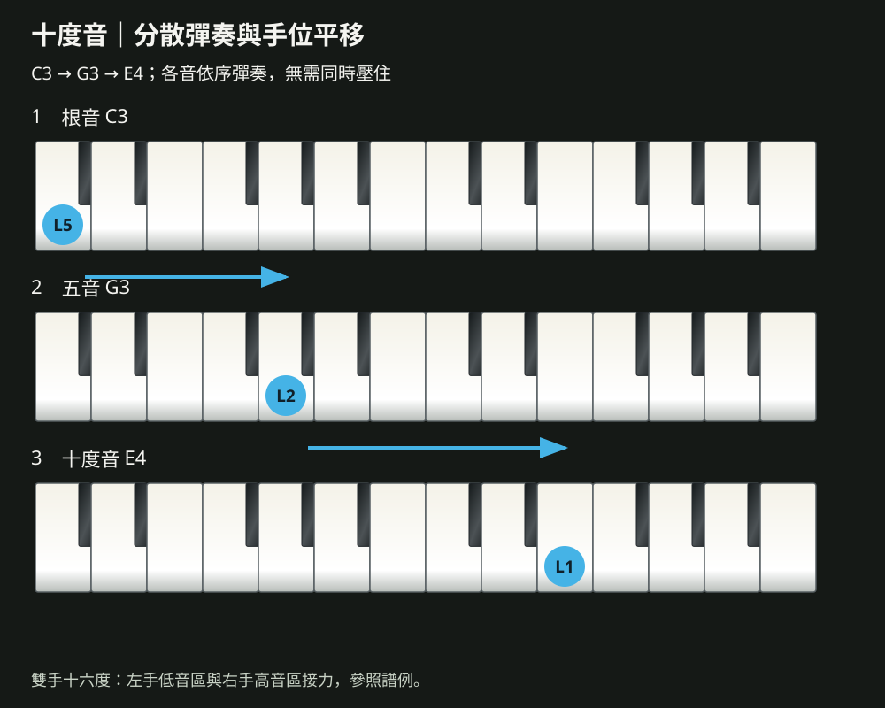

節奏型態（二）與十度、十六度伴奏
Rhythm Patterns II · Tenths & Sixteenths
主講：畫素音樂工作坊 李奕勳
musicallanding@gmail.com
今天的路線：為同一組和弦換上不同的風格
- 能以 12/8 的三連音律動彈奏 Slow Rock 伴奏
- 能彈奏 2/4 進行曲的蹦洽伴奏，並辨識 Bossa Nova 的風格
- 能彈奏十度音伴奏與雙手十六度的分散和弦
- 下課前，以三種不同的節奏型態彈奏同一組和弦，讓同學猜出風格
卡農進行的下行低音線，練好了嗎？
- 全班以下行低音線彈奏卡農進行一輪
- 兩位同學分享：在喜愛的歌曲裡找到的和弦進行
- 老師回答上週出場券的問題
卡農進行的低音線，目前的狀態？
十度音、Slow Rock、Bossa Nova
跟著點頭數拍：〈夢中的婚禮〉的左手寬廣流動；〈Unchained Melody〉每一拍裡藏著三個小拍；〈The Girl From Ipanema〉輕盈、帶著巴西的切分。
12/8：每一拍分成三份，帶有搖擺感
數拍方法
1 & a 2 & a 3 & a 4 & a
一小節四大拍、十二個八分音符。五〇、六〇年代的抒情搖滾與老歌最常使用。
伴奏型
L5 L2 L1 R1 L1 L2
每拍三個音，兩拍一組，第一拍的根音最重。速度放慢，讓三連音保持平均。
第二堂學過三連音：將一拍平均分成三份。Slow Rock 就是整首歌都用三連音律動。
Slow Rock 與進行曲：先聆聽，再跟著彈奏
兩拍子的「蹦洽」，以及巴西的 Bossa Nova
2/4 進行曲
根音與五音輪流當作低音，中間插入和弦：蹦、洽、蹦、洽。輕快、有朝氣，適合兒歌與節慶歌曲。
Bossa Nova
源自巴西，融合森巴與爵士，低音在一拍與三拍，和弦以切分的節奏輕輕彈奏。屬於中級課程的節奏型態，今天先熟悉它的聲音。
原教材的節奏型態還包括 Rumba、Cha Cha、Tango、Disco、Boogie Woogie 等舞曲。流行鋼琴的伴奏，多半來自各國的傳統舞曲。
節奏型態
12/8 的一小節，共有幾個八分音符？
- 4 個
- 8 個
- 12 個
- 16 個
「每一拍裡有三個小拍，聽起來像在搖晃」，最可能是哪一種節奏？
- Disco
- Slow Rock
- 進行曲
- 8 Beats
休息十分鐘，張開左手，量一量拇指到小指能跨幾個白鍵
十度音：三音的高八度

- 先彈奏根音 1，再彈奏五音 5，接著彈奏十度音 10，然後在 5 與 10 之間來回
- 寫成 1 5 10 5 10 5 10 5，聲音寬廣、溫柔
- 理查‧克萊德曼〈夢中的婚禮〉〈水邊的阿第麗娜〉的招牌伴奏
- 手掌較小的人，以分散的方式彈奏，不必同時按住十度
十度音與雙手十六度：伴奏音域擴大到兩個八度
十二堂學過的伴奏型，總整理
| 風格 | 拍號 | 伴奏型 | 適合的歌曲 |
|---|---|---|---|
| Slow Soul | 4/4 | （一）到（四） | 華語抒情、流行慢歌 |
| 4 Beats、8 Beats | 4/4 | 單手 8 度、雙手 16 度 | 主歌、副歌的段落轉換 |
| 華爾滋 | 3/4 | 蹦洽洽、分散和弦 | 圓舞曲、生日歌 |
| Slow Rock | 12/8 | 三連音分散和弦 | 抒情老歌、藍調抒情 |
| 進行曲 | 2/4 | 蹦洽 | 兒歌、節慶歌曲 |
| 十度音 | 4/4 | 1 5 10 5 10 5 10 5 | 鋼琴演奏曲、浪漫抒情 |
風格猜猜看
- 每組以 C → Am → F → G 準備三種不同的節奏型態
- 上台彈奏時不公布名稱，其他組別猜出風格與拍號
- 彈奏穩定 2 分；被猜中，雙方各得 1 分
錄下兩種新的伴奏
① Slow Rock 12/8
② 十度音伴奏
重新聆聽時檢查：三連音是否平均？十度音的高音是否比根音輕？
Slow Rock 一拍三個音，
十度音是三音的高八度，
伴奏的風格，來自世界各地的舞曲。
離開教室前，寫下 3-2-1
期末準備
第十二堂是期末發表：一首使用兩種以上伴奏型的歌曲，C 大調或 G 大調皆可。
課後練習：完成一項，點選一次打勾
- Slow Rock 搭配 C → Am → F → G，三連音保持平均
- 十度音伴奏搭配卡農進行，彈奏兩輪
- 為期末曲目選擇兩種伴奏型，標在和弦譜上
- 錄下期末曲目的伴奏
- 填寫第十二堂課前問卷
第十二堂 大小調關係與 G 大調歌曲彈奏
C 大調與 A 小調、G 大調與 E 小調，
關係調共用同一組調號，
最後完成這門課的期末發表。
掃描 Qr Code，直接在網站上填寫第十二堂的課前問卷。